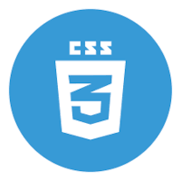

Esse é o meu primeiro documento HTML, estou muito feliz
Este é um momento único! Estou criando meu primeiro site.
Você pode escrever
um parágrafo de
qualquer jeito.
Basta colocar tudo
no meio do par em tags
Se precisar quebrar
o texto em algum lugar
específico
como este,
você pode usar a tag <br>
® £ ¥ € © ¢ Δ ↑ 😏
Abaixo você vai ver uma imagem que está na minha pasta
Podemos também carregar imagens que estão em Sub-Pastas
Também podemos carregar imagens externas
Nesta frase temos um termo em negrito usando a tag B (não semântica)
Nesta frase, temos um termo em destaque usando a tag STRONG (semântica)
Nesta frase, temos um termo em itálico usando a tag I (não semântica)
Nesta frase, temos um termo em ênfase usando a tag EM (semântica)
Podemos criar também um texto marcado usando a tag MARK
E no outro parágrafo, temos outro texto marcado no final
Estamos criando um texto grande e um texto pequeno, neste parágrafo
Podemos marcar um texto como excluído, para indicar que ele deve ser lido, mas não considerado.
Podemos marcar um texto como inserido, para dar uma ênfase e indicar que ele foi adicionado depois.
Para inserir coisas do tipo x2 = 3
Para inserir coisas do tipo H2O
Como diria o pai de um amigo, o computador é um burro muito rápido
Estou estudando HTML e CSS. Estou adorando.
Você pode acessar o meu repositório público no GitHub
Você também pode acessar o meu canal gratuito no Youtube
Esta é a primeira página do site. Se você quiser, pode acessar também a minha segunda página.
Tente abrir esse site em vários dispositivos diferentes ou simplesmente aumente e diminua o tamanho do seu navegador.
Vamos aprender a reproduzir áudios em HTML5
Este vídeo está hospedado no meu próprio servidor.